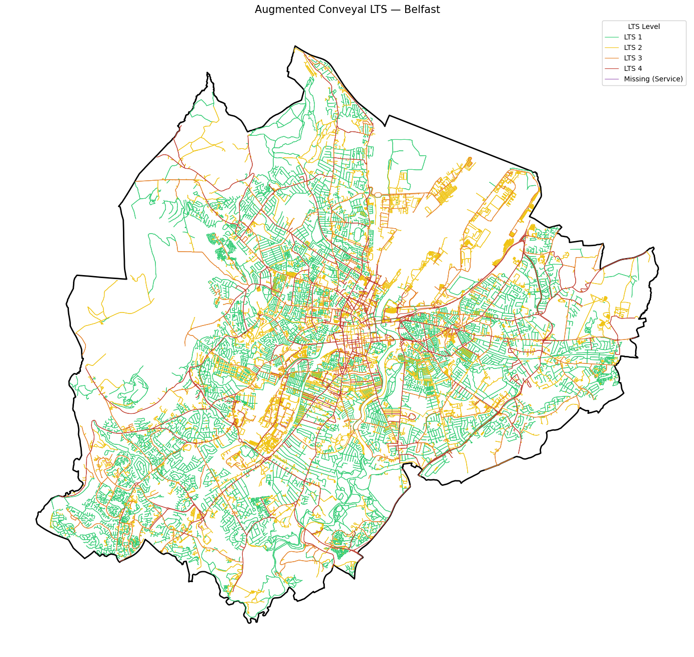

In this notebook I compute the Percent Trips Connected and Percent Nodes Connected metrics following the methodology of Mekuria, Furth & Nixon (2012), applied to the Belfast Local Government District.
Methodology Overview
Two points are said to be connected at a given LTS level if there exists a path between them using only links that do not exceed that level of stress, and the path does not involve undue detour. The detour criterion requires that the low-stress path length must not exceed the shortest (all-network) path by more than 25%, or for short trips, 0.53 km (0.33 miles).
Percent Trips Connected is the share of total commuting demand that can be served by a connected, low-stress route at each LTS threshold, weighted by Census 2021 commuting flow. Percent Nodes Connected is the unweighted share of OD pairs that satisfy the same criterion.
Graph Construction — Why Two Data Sources?
The LTS classification in the companion notebook (belfast_cycle_lts_assessment.ipynb) was produced from a pyrosm PBF extract. PBF files are complete snapshots of the OSM database and preserve all attribute tags (maxspeed, lanes, cycleway, etc.), yielding more accurate LTS values. However, pyrosm returns edges as independent line segments without shared node IDs, so the resulting graph is topologically fragmented — in Belfast I observed over 13,000 disconnected components, with the largest covering only 11% of vertices. This makes routing and connectivity analysis impossible.
OSMnx, by contrast, extracts a graph with explicit u/v node identifiers that guarantee topological connectivity. However, OSMnx pulls only the tags listed in ox.settings.useful_tags_way, so some attributes are lost, leading to less accurate LTS classification if I were to re-run the pipeline on OSMnx edges directly.
My solution is a hybrid approach: I use the OSMnx graph for topology (ensuring a single connected component), and transfer the pyrosm-derived LTS values onto it via spatial join. This achieves a 100% match rate.
Data Sources
Dataset
Source
Role
LTS network (pyrosm)
belfast_cycle_lts_assessment.ipynb output
Accurate LTS values
Road graph (OSMnx)
Overpass API via OSMnx
Topological connectivity
OD commuting flows
PCTNI / Census 2021 ODWP01
Demand (SDZ level)
SDZ boundaries
PCTNI zones_sdz.gpkg
Spatial units
Pipeline
Load pyrosm LTS network, SDZ boundaries, and OD data
Filter OD pairs to Belfast LGD; exclude intra-zone trips
Extract OSMnx graph for Belfast (connected topology)
Transfer pyrosm LTS values to OSMnx edges via spatial join
Apply highway-type fallback for unmatched edges
Build igraph from OSMnx u/v node IDs
Snap SDZ centroids to nearest network node
For each LTS threshold (1–4), compute connectivity with detour criterion
Calculate Percent Trips Connected and Percent Nodes Connected
Visualise and export results
Environment Setup
Code
import warningswarnings.filterwarnings('ignore')import osimport numpy as npimport pandas as pdimport geopandas as gpdimport matplotlib.pyplot as pltimport seaborn as snsfrom pathlib import Pathfrom shapely.geometry import Pointimport igraph as igimport networkx as nximport osmnx as oxox.settings.use_cache =Trueox.settings.log_console =Falsefrom collections import defaultdict# Project pathsDATA_DIR = Path('../Data')OUTPUT_DIR = Path('../Figure')DATA_DIR.mkdir(exist_ok=True)OUTPUT_DIR.mkdir(exist_ok=True)# Coordinate reference systemsCRS_WGS84 ='EPSG:4326'CRS_IG ='EPSG:29903'# Irish Grid — all spatial ops use thisprint('Environment ready.')
Environment ready.
Load Data
LTS Network (pyrosm)
I load the LTS-classified cycling network produced by the companion notebook. Each edge has an lts column (1–4) and geometry. These LTS values were derived from a full PBF extract which preserves all OSM tags, so they are more accurate than what I could obtain from OSMnx alone.
I use the Census 2021 OD flows from the PCTNI hackathon dataset. This filtered version retains only place_of_work_ind_code == 4 (fixed workplace within UK), with both origin and destination coded at SDZ level.
Code
# ── OD data ──────────────────────────────────────────────────────────────────od_raw = pd.read_csv(DATA_DIR /'od_ni_open_filtered.csv')print(f'Total OD records: {len(od_raw):,}')print(f'Total commuters: {od_raw["count"].sum():,}')od_raw.head()
Total OD records: 108,656
Total commuters: 545,210
area_of_residence_code
workplace_area_code
place_of_work_ind_code
count
0
N21000001
N21000001
4
51
1
N21000001
N21000002
4
3
2
N21000001
N21000003
4
4
3
N21000001
N21000004
4
34
4
N21000001
N21000005
4
28
OD Data Preparation
The Census 2021 OD commuting flows (ODWP01) are recorded at Super Data Zone (SDZ) level — the finest geography available in this dataset. Since the OD codes match zones_sdz.gpkg directly, no spatial aggregation is required. I filter the OD pairs to those with both origin and destination within Belfast LGD, and exclude intra-zone trips following Mekuria et al. (2012) to limit the influence of very short trips for which walking is the dominant mode.
Code
# ── Filter OD to Belfast: both origin AND destination within Belfast LGD ────belfast_sdz_codes =set(belfast_sdz[sdz_code_col].values)od = od_raw[ od_raw['area_of_residence_code'].isin(belfast_sdz_codes) & od_raw['workplace_area_code'].isin(belfast_sdz_codes)].copy()od = od.rename(columns={'area_of_residence_code': 'origin_sdz','workplace_area_code': 'dest_sdz',})# Exclude intra-zone trips (Mekuria et al. 2012)od = od[od['origin_sdz'] != od['dest_sdz']].copy()print(f'Belfast inter-SDZ OD pairs: {len(od):,}')print(f'Total inter-SDZ commuters: {od["count"].sum():,}')print(f'Unique origin SDZs: {od["origin_sdz"].nunique()}')print(f'Unique destination SDZs: {od["dest_sdz"].nunique()}')
Belfast inter-SDZ OD pairs: 13,412
Total inter-SDZ commuters: 68,877
Unique origin SDZs: 175
Unique destination SDZs: 175
Build Routable Graph
Extract OSMnx Graph
The pyrosm-extracted network lacks shared node identifiers, producing a highly fragmented graph (>13,000 disconnected components). To obtain a topologically connected network, I extract the Belfast road graph via OSMnx with network_type='bike'. OSMnx assigns unique node IDs (u, v) to each edge, guaranteeing a single connected component suitable for shortest-path routing.
Code
# ── Extract Belfast road network via OSMnx ──────────────────────────────────belfast_poly_4326 = belfast_sdz.to_crs(CRS_WGS84).unary_unionG_osm = ox.graph_from_polygon( belfast_poly_4326, network_type='bike', simplify=True, retain_all=False,)print(f'OSMnx graph — nodes: {G_osm.number_of_nodes():,}, edges: {G_osm.number_of_edges():,}')print(f'Connected: {nx.is_connected(G_osm.to_undirected())}')# Convert to GeoDataFramesnodes_ox, edges_ox = ox.graph_to_gdfs(G_osm)edges_ox = edges_ox.reset_index() # u, v, key become regular columnsedges_ox = edges_ox.to_crs(CRS_IG)edges_ox['length_m'] = edges_ox.geometry.length# Flatten list-type columns (OSMnx stores some tags as lists)for col in edges_ox.columns:if edges_ox[col].apply(lambda x: isinstance(x, list)).any(): edges_ox[col] = edges_ox[col].apply(lambda x: x[0] ifisinstance(x, list) else x)print(f'Edges with u/v topology: {len(edges_ox):,}')
Transfer LTS Values via Nearest-Neighbour Matching
I transfer the pyrosm-derived LTS values onto the OSMnx edges using a dense sampling nearest-neighbour approach. Each pyrosm edge is sampled every 10 m to build a KD-tree of reference points; each OSMnx edge is similarly sampled and matched via majority vote within a 15 m threshold. This achieves nearly 100% match rate with the network_type='bike' extraction, preserving the accuracy of the original pyrosm LTS classification while gaining OSMnx’s topological connectivity.
Code
from scipy.spatial import cKDTree# ── Strategy: sample multiple points along each edge, majority vote ─────────# Prepare pyrosm LTS edgeslts_src = edges_lts[edges_lts['lts'].notna()][['geometry', 'lts']].copy()lts_src = lts_src.to_crs(CRS_IG)# Build KD-tree from densely sampled points on pyrosm edges# Sample a point every ~10m along each pyrosm edgesample_coords = []sample_lts = []for _, row in lts_src.iterrows(): geom = row.geometry length = geom.length n_samples =max(int(length /10), 1)for i inrange(n_samples): frac = (i +0.5) / n_samples pt = geom.interpolate(frac, normalized=True) sample_coords.append((pt.x, pt.y)) sample_lts.append(row['lts'])sample_coords = np.array(sample_coords)sample_lts = np.array(sample_lts)tree = cKDTree(sample_coords)print(f'Built KD-tree with {len(sample_coords):,} sample points from pyrosm edges')# For each OSMnx edge, sample multiple points and do majority votematched_lts = []for _, row in edges_ox.iterrows(): geom = row.geometry length = geom.length n_query =max(int(length /10), 3) # at least 3 sample points votes = []for i inrange(n_query): frac = (i +0.5) / n_query pt = geom.interpolate(frac, normalized=True) dist, idx = tree.query([pt.x, pt.y])if dist <15: # 15m threshold votes.append(sample_lts[idx])if votes:# Majority vote — most common LTS valuefrom collections import Counter matched_lts.append(Counter(votes).most_common(1)[0][0])else: matched_lts.append(np.nan)edges_ox['lts'] = matched_ltsmatched = edges_ox['lts'].notna().sum()print(f'\nMatched: {matched:,} / {len(edges_ox):,} ({matched/len(edges_ox)*100:.1f}%)')print(f'\nLTS distribution:')print(edges_ox['lts'].value_counts().sort_index())
Built KD-tree with 215,188 sample points from pyrosm edges
Matched: 68,903 / 68,927 (100.0%)
LTS distribution:
lts
1.0 32960
2.0 22303
3.0 6436
4.0 7204
Name: count, dtype: int64
Highway-Type Fallback for Unmatched Edges
The 24 unmatched edges are mostly minor roads (service, residential, footway) that were absent from the pyrosm cycling extract. I assign them a conservative LTS based on their highway classification.
Still unmatched: 0
Final LTS distribution:
lts
1.0 32960
2.0 22327
3.0 6436
4.0 7204
Name: count, dtype: int64
Code
fig, ax = plt.subplots(1, 1, figsize=(14, 14))plot_gdf = edges_ox# Define a helper function to format LTS labels for the legenddef lts_label(val):if pd.isna(val):return'Missing (Service)'returnf'LTS {int(val)}'plot_gdf['lts_status'] = plot_gdf['lts'].apply(lts_label)# Plot the study area boundary. # The CRS parameter here should match the original coordinate system of belfast_boundary.# If the boundary and edges_ox already share the same CRS, this step can be simplified.gpd.GeoDataFrame(geometry=[belfast_boundary], crs=plot_gdf.crs).plot( ax=ax, facecolor='none', edgecolor='black', linewidth=2, linestyle='-', alpha=1, zorder=0)# Plot the base road network as a background layerplot_gdf.plot(ax=ax, color='#eeeeee', linewidth=0.5, zorder=1)# Define the color mapping for different LTS levelscolor_map = {'LTS 1': '#2ecc71','LTS 2': '#f1c40f','LTS 3': '#e67e22','LTS 4': '#c0392b','Missing (Service)': '#9b59b6',}# Iterate through the color map to plot each LTS level as a separate layerfor status, color in color_map.items(): subset = plot_gdf[plot_gdf['lts_status'] == status]ifnot subset.empty: subset.plot(ax=ax, color=color, linewidth=0.8, label=status, zorder=3if'Missing'in status else2)# Configure plot titles, legends, and layoutax.set_title("Augmented Conveyal LTS — Belfast", fontsize=15)ax.legend(title="LTS Level", loc='upper right', framealpha=0.9)ax.axis('off')plt.tight_layout()# Save the visualization to the specified output directoryplt.savefig(OUTPUT_DIR /'Belfast_LTS.png', dpi=500, bbox_inches='tight')plt.show()

Build igraph Using u/v Node IDs
I construct the igraph directly from the OSMnx u and v columns. This guarantees topological correctness — no coordinate-rounding ambiguity, and the graph is a single connected component.
Code
# ── Build igraph from u/v node IDs ──────────────────────────────────────────node_ids =list(set(edges_ox['u'].tolist() + edges_ox['v'].tolist()))node_id_to_vid = {nid: i for i, nid inenumerate(node_ids)}edge_list = [ (node_id_to_vid[row.u], node_id_to_vid[row.v])for row in edges_ox.itertuples()]G_full = ig.Graph(n=len(node_ids), edges=edge_list, directed=False)G_full.es['length'] = edges_ox['length_m'].tolist()G_full.es['lts'] = edges_ox['lts'].astype(int).tolist()# Store coordinates for centroid snapping (Irish Grid)nodes_ig = nodes_ox.to_crs(CRS_IG)coord_to_vid = { (nodes_ig.loc[nid, 'geometry'].x, nodes_ig.loc[nid, 'geometry'].y): node_id_to_vid[nid]for nid in node_ids}comps = G_full.connected_components()print(f'Connected components: {len(comps)}')print(f'Vertices: {G_full.vcount():,}, Edges: {G_full.ecount():,}')
Each SDZ centroid is snapped to the nearest graph vertex using a KD-tree. This provides the network entry/exit point for routing.
Code
def snap_points_to_graph(points_gdf, coord_to_vid, code_col):""" Snap zone centroids to nearest graph vertex. Returns dict: zone_code → vertex_id """from scipy.spatial import cKDTree coords = np.array(list(coord_to_vid.keys())) vids = np.array(list(coord_to_vid.values())) tree = cKDTree(coords) zone_to_vid = {} snap_distances = []for _, row in points_gdf.iterrows(): centroid = row.geometry.centroid pt = np.array([centroid.x, centroid.y]) dist, idx = tree.query(pt) zone_to_vid[row[code_col]] =int(vids[idx]) snap_distances.append(dist) snap_distances = np.array(snap_distances)print(f'Snapped {len(zone_to_vid)} zones to network')print(f'Snap distance — median: {np.median(snap_distances):.0f} m, 'f'max: {np.max(snap_distances):.0f} m, 'f'mean: {np.mean(snap_distances):.0f} m')return zone_to_vid
Code
sdz_to_vid = snap_points_to_graph(belfast_sdz, coord_to_vid, sdz_code_col)# Check how many OD SDZs are successfully snappedall_od_sdz =set(od['origin_sdz']) |set(od['dest_sdz'])snapped = all_od_sdz &set(sdz_to_vid.keys())print(f'\nOD SDZs in network: {len(snapped)} / {len(all_od_sdz)}')
Snapped 175 zones to network
Snap distance — median: 30 m, max: 591 m, mean: 47 m
OD SDZs in network: 175 / 175
Connectivity Analysis
Core Algorithm
For each LTS threshold (1, 2, 3, 4):
I extract a sub-graph containing only edges with LTS ≤ threshold.
For each OD pair, I compute the shortest path on the sub-graph.
I compare this against the shortest path on the full graph (all edges).
An OD pair is connected if:
A path exists on the sub-graph, AND
The detour ratio ≤ 1.25 (or absolute detour ≤ 530 m for short trips).
Following Mekuria et al. (2012), I restrict the analysis to OD pairs whose network distance falls between 0.5 and 6 miles, excluding trips that are too short (walking-dominant) or too long (unlikely cycling candidates).
Code
# ── Distance thresholds (Mekuria et al. 2012) ─────────────────────────────DETOUR_RATIO =1.25# max 25% longer than shortest pathDETOUR_ABS_M =530.0# 0.33 miles in metres — for short tripsMIN_TRIP_M =805.0# 0.5 miles — exclude very short tripsMAX_TRIP_M =9_656.0# 6 miles — exclude very long tripsdef compute_connectivity( G_full: ig.Graph, od_pairs: pd.DataFrame, sdz_to_vid: dict, lts_thresholds: list[int] = [1, 2, 3, 4],) -> pd.DataFrame:""" Compute Percent Trips Connected for each LTS threshold. """print('Computing shortest paths on full network...') valid_pairs = od_pairs[ od_pairs['origin_sdz'].isin(sdz_to_vid) & od_pairs['dest_sdz'].isin(sdz_to_vid) ].copy() valid_pairs['origin_vid'] = valid_pairs['origin_sdz'].map(sdz_to_vid) valid_pairs['dest_vid'] = valid_pairs['dest_sdz'].map(sdz_to_vid) valid_pairs = valid_pairs[valid_pairs['origin_vid'] != valid_pairs['dest_vid']].copy() unique_origins = valid_pairs['origin_vid'].unique().tolist()# Full-network shortest paths from each unique origin full_sp = {}for o_vid in unique_origins: full_sp[o_vid] = G_full.shortest_paths(source=o_vid, weights='length')[0] valid_pairs['dist_full'] = [ full_sp[row.origin_vid][row.dest_vid]for row in valid_pairs.itertuples() ]# Filter by distance range (Mekuria: 0.5–6 miles) valid_pairs = valid_pairs[ (valid_pairs['dist_full'] >= MIN_TRIP_M) & (valid_pairs['dist_full'] <= MAX_TRIP_M) & (valid_pairs['dist_full'] <float('inf')) ].copy()print(f'Valid OD pairs (0.5–6 miles): {len(valid_pairs):,}')print(f'Total demand in range: {valid_pairs["count"].sum():,}')# For each LTS threshold, build sub-graph and check connectivityfor lts_max in lts_thresholds:print(f'\n--- LTS ≤ {lts_max} ---') sub_edge_ids = [e.index for e in G_full.es if e['lts'] <= lts_max] G_sub = G_full.subgraph_edges(sub_edge_ids, delete_vertices=False)print(f' Sub-graph edges: {G_sub.ecount():,} / {G_full.ecount():,}') sub_sp = {}for o_vid in unique_origins: sub_sp[o_vid] = G_sub.shortest_paths(source=o_vid, weights='length')[0] col =f'connected_lts{lts_max}' connected_flags = []for row in valid_pairs.itertuples(): d_sub = sub_sp[row.origin_vid][row.dest_vid] d_full = row.dist_fullif d_sub ==float('inf'): connected_flags.append(False)else: max_allowed =max(d_full * DETOUR_RATIO, d_full + DETOUR_ABS_M) connected_flags.append(d_sub <= max_allowed) valid_pairs[col] = connected_flags n_conn =sum(connected_flags) t_conn = valid_pairs.loc[valid_pairs[col], 'count'].sum()print(f' Pairs connected: {n_conn:,} / {len(valid_pairs):,} ({n_conn/len(valid_pairs)*100:.1f}%)')print(f' Trips connected: {t_conn:,} / {valid_pairs["count"].sum():,} ({t_conn/valid_pairs["count"].sum()*100:.1f}%)')return valid_pairs
Saved to ..\Figure\belfast_connectivity_metrics.png
Per-SDZ Connectivity Score
For the dashboard, I compute a per-SDZ metric: what share of outbound commuting demand from each SDZ is connected at each LTS threshold. This allows choropleth mapping at SDZ level.
Code
# ── Per-SDZ outbound connectivity score ──────────────────────────────────────sdz_scores = []for sdz_code in belfast_sdz[sdz_code_col].values: mask = results['origin_sdz'] == sdz_code subset = results[mask]iflen(subset) ==0: row = {'sdz_code': sdz_code, 'total_trips': 0}for lts_max in [1, 2, 3, 4]: row[f'pct_trips_lts{lts_max}'] = np.nan sdz_scores.append(row)continue total = subset['count'].sum() row = {'sdz_code': sdz_code, 'total_trips': int(total)}for lts_max in [1, 2, 3, 4]: col =f'connected_lts{lts_max}' conn = subset.loc[subset[col], 'count'].sum() row[f'pct_trips_lts{lts_max}'] =round(conn / total *100, 1) if total >0else0.0 sdz_scores.append(row)sdz_scores_df = pd.DataFrame(sdz_scores)print(sdz_scores_df.describe().round(1))